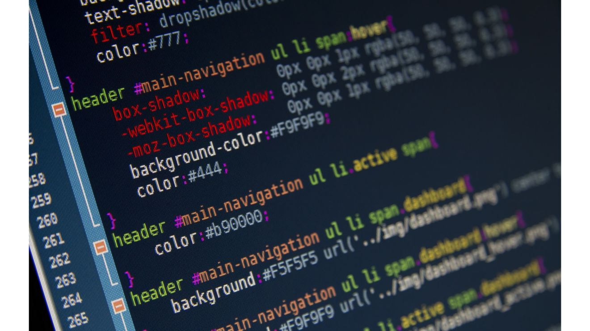

Você já deve ter entendido a importância desses profissionais, não é mesmo? E, se você atua, já atuou ou pretende atuar na área, sabe da importância dos programadores. O nosso site só está no ar – incluindo o texto que você está lendo – porque nós temos um time que garante o melhor funcionamento dele, prevendo ações de otimização e solucionando eventuais problemas.

O mesmo vale para os nossos softwares de automação de marketing e email marketing: imagine que são mais de 22 mil clientes, no Brasil e no exterior, contando com os nossos serviços para executarem as ações de vendas e relacionamento com o público.
Para garantir que tudo esteja funcionando da melhor forma, são realizados testes de forma diária. Eles permitem validar a segurança do sistema utilizado aqui na Dinamize.
Não podemos esquecer das implementações, realizadas de forma frequente, nos nossos serviços. Isso inclui o desenvolvimento e aplicação de novas funcionalidades para quem usa os nossos serviços, que visam otimizar tanto a forma como essas pessoas se comunicam com seu público quanto qualificar a segurança dos processos realizados por eles.